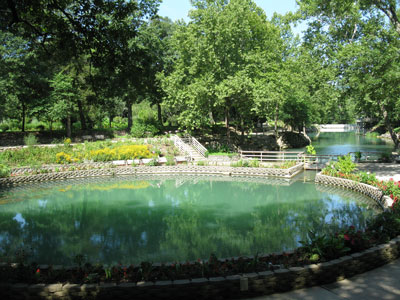
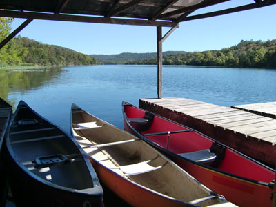
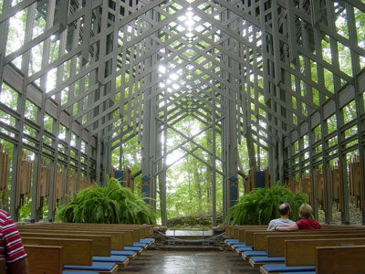

Historic mountain community known for its preserved Victorian architecture, winding hillside streets, vibrant arts scene, natural springs, unique shops, and outdoor recreation opportunities.
General Information
How to Get There
From Bentonville (45 mi): Take US-71 south to AR-12 east, then follow US-62 east through the Ozark Mountains into downtown Eureka Springs.
Overview
Eureka Springs is a small Victorian-era resort town in the Ozark Mountains of northwest Arkansas, and the entire downtown is a National Historic District. It is known for its steep, winding streets, its Victorian architecture built into the hillsides, its natural springs, and its artistic and independent character. The town has no traffic lights, and its buildings and houses cling to the slopes in a way that makes it feel like a European mountain village.
Visitors come to Eureka Springs for the Crescent Hotel, known as "America's most haunted hotel," for the architectural beauty of Thorncrown Chapel, and for the Christ of the Ozarks statue. They also come to stroll the historic downtown, to shop in its galleries and boutiques, to ride the trolleys, and for the lakes and trails of the surrounding Ozarks, and the town is a popular getaway for visitors from Kansas City, Tulsa, and Dallas.
History
The area's springs were considered sacred by Native Americans, and in 1879 Dr. Alvah Jackson, who said that a spring had cured his eyes, spread the story of the "healing waters," and thousands of people poured into the area. The town was incorporated in 1880 and grew quickly, with Victorian homes, hotels, and bathhouses built into the hillsides. The Crescent Hotel opened in 1886 as a luxury resort, and the town was a destination for those seeking cures until the early twentieth century. In 1968, the Great Passion Play opened, and the Christ of the Ozarks statue, completed in 1966, became a landmark. The town has since developed into an arts and tourism community.
Sightseeing and Popular Landmarks
The Crescent Hotel & Spa sits on a hilltop and offers ghost tours of its allegedly haunted rooms, and Thorncrown Chapel, designed by architect Fay Jones and completed in 1980, is a glass and wood chapel in the woods that has been called one of the best buildings in American architecture. The Christ of the Ozarks statue is 67 feet tall, and the Razorback Tower is a lookout. Basin Spring Park is in the center of downtown, and the historic loop of Spring Street is lined with shops and galleries.
Culture and Museums
The Blue Spring Heritage Center has gardens, a spring, and exhibits on the area's Native American and Cherokee heritage, and the Eureka Springs Historical Museum has local history. The town has an active arts community, with many galleries, studios, and festivals such as the Eureka Springs Blues Weekend and Eureka Springs Festival of the Arts. The Great Passion Play, an outdoor drama about the last days of Jesus, is performed in season.
Parks
Lake Leatherwood City Park is one of the largest city parks in the United States, with a lake, hiking and biking trails, and camping, and Beaver Lake and the White River are nearby. Basin Spring Park and the Eureka Springs Historic Loop Trolley are popular in town, and the Ozark Highlands Trail and the Buffalo National River are within a short drive. The town is also known for its fall colors in the Ozark hills.
Seasons and Weather
Eureka Springs has a humid subtropical climate. Summers are warm and humid, with highs in the upper 80s°F, and winters are cool, with highs in the 40s°F and about 8 inches of snow. Spring and fall are the best times to visit, and October is especially busy because of the fall foliage. Some attractions close or have limited hours in the winter.
This article uses material from Wikipedia as well as information from official tourism and institutional sources. Key references include Eureka Springs Tourism, Crescent Hotel, Thorncrown Chapel, Arkansas Tourism, and National Weather Service Tulsa. Wikipedia material is from the article "Eureka Springs, Arkansas", and is available under the Creative Commons Attribution-Share-Alike License 3.0.
Featured Locations

Mitchel23, CC BY-SA 3.0, via Wikimedia Commons; Image Size Adjusted

Blue Spring Heritage Center
Botanical and cultural attraction featuring a massive natural spring, native gardens, archaeological sites, and exhibits interpreting Indigenous history and the Trail of Tears.
Christ of the Ozarks
Monumental mountaintop sculpture depicting Jesus Christ with panoramic views, landscaped grounds, and access to religious and cultural attractions.
Crescent Hotel
Historic Victorian-era resort hotel featuring distinctive architecture, mountain views, full-service amenities, renowned ghost tours, and a long history as one of the state's most iconic lodging destinations.

Jerry Kwit, CC BY-SA 3.0, via Wikimedia Commons; Image Size Adjusted

Lake Leatherwood Park
Large outdoor recreation area centered around a spring-fed lake, offering hiking and mountain biking trails, boating, fishing, camping, historic stone structures, and scenic Ozark landscapes.

The original uploader was Bobak at English Wikipedia., CC BY-SA 2.5, via Wikimedia Commons; Image Size Adjusted

Thorncrown Chapel
Award-winning glass-and-wood chapel set within a forested hillside, renowned for its innovative architecture, natural light, and peaceful setting among the trees.